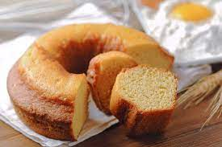

Bolo simples de baunilha

Ingredientes
- 1 xícara (chá) de leite (240 ml)
- 1/2 xícara (chá) de óleo (120 ml)
- 3 ovos
- 2 1/2 xícaras (chá) de farinha de trigo (375 g)
- 1 1/2 xícara (chá) de açúcar
- 1 colher (sopa) de essência de baunilha
- 1 colher (sopa) de fermento químico
Modo de preparo
- Bater todos os ingredientes a mão ou no liquidificador.
- Despejar em uma fôrma untada e enfarinhada e assar a 180º C por 40 minutos.
Observação
Pode-se substituir 1/2 xícara (chá) de farinha de trigo por farinha de aveia.